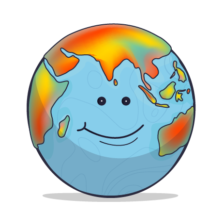
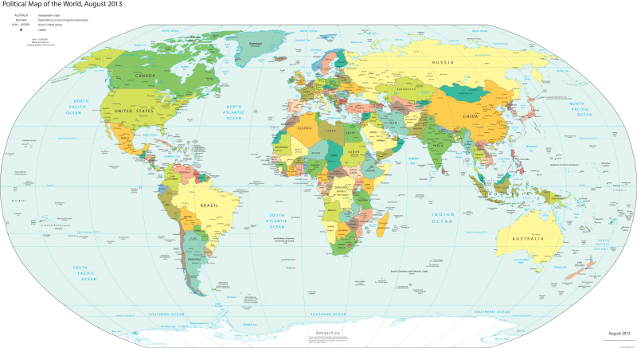

thematische Karten
 |
Thematische Karten sind Karten, die uns etwas Bestimmtes über ein Gebiet zeigen. Sie zeigen uns nicht, wie die Landschaft aussieht (so wie physische Karten), sondern geben uns Informationen zu einem Thema. Eine Wetterkarte zeigt, wo es regnet oder sonnig ist.Eine Bevölkerungskarte zeigt, wie viele Menschen in dem Gebiet leben. Eine Karte der Tierwelt zeigt, wo welche Tiere leben. |
Politische Karten
Politische Karten zeigen Ländergrenzen, Hauptstädte und größere Städte. Sie zeigen nicht, wie die Landschaft aussieht,
sondern wie die Menschen die Welt aufgeteilt haben.
|
 Quelle: CIA - The World Factbook, Public domain, via Wikimedia Commons, Fundstelle |
Länder und Grenzen: Warum sind politische Karten wichtig? |